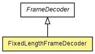

org.jboss.netty.handler.codec.frame
Class FixedLengthFrameDecoder
java.lang.Object
 org.jboss.netty.channel.SimpleChannelUpstreamHandler
org.jboss.netty.handler.codec.frame.FrameDecoder
org.jboss.netty.handler.codec.frame.FixedLengthFrameDecoder
org.jboss.netty.channel.SimpleChannelUpstreamHandler
org.jboss.netty.handler.codec.frame.FrameDecoder
org.jboss.netty.handler.codec.frame.FixedLengthFrameDecoder
- All Implemented Interfaces:
- ChannelHandler, ChannelUpstreamHandler
public class FixedLengthFrameDecoder
- extends FrameDecoder

A decoder that splits the received ChannelBuffers by the fixed number
of bytes. For example, if you received the following four fragmented packets:
+---+----+------+----+
| A | BC | DEFG | HI |
+---+----+------+----+
A FixedLengthFrameDecoder(3) will decode them into the
following three packets with the fixed length:
+-----+-----+-----+
| ABC | DEF | GHI |
+-----+-----+-----+
| Methods inherited from class java.lang.Object |
clone, equals, finalize, getClass, hashCode, notify, notifyAll, toString, wait, wait, wait |
FixedLengthFrameDecoder
public FixedLengthFrameDecoder(int frameLength)
- Calls
FixedLengthFrameDecoder(int, boolean) with false
FixedLengthFrameDecoder
public FixedLengthFrameDecoder(int frameLength,
boolean allocateFullBuffer)
- Creates a new instance.
- Parameters:
frameLength - the length of the frameallocateFullBuffer - true if the cumulative ChannelBuffer should use the frameLength as its initial size
decode
protected Object decode(ChannelHandlerContext ctx,
Channel channel,
ChannelBuffer buffer)
throws Exception
- Description copied from class:
FrameDecoder
- Decodes the received packets so far into a frame.
- Specified by:
decode in class FrameDecoder
- Parameters:
ctx - the context of this handlerchannel - the current channelbuffer - the cumulative buffer of received packets so far.
Note that the buffer might be empty, which means you
should not make an assumption that the buffer contains
at least one byte in your decoder implementation.
- Returns:
- the decoded frame if a full frame was received and decoded.
null if there's not enough data in the buffer to decode a frame.
- Throws:
Exception
createCumulationDynamicBuffer
protected ChannelBuffer createCumulationDynamicBuffer(ChannelHandlerContext ctx)
- Description copied from class:
FrameDecoder
- Create a new
ChannelBuffer which is used for the cumulation. Be aware that this MUST be a dynamic buffer. Sub-classes may override this to provide a
dynamic ChannelBuffer which has some prelocated size that better fit their need.
- Overrides:
createCumulationDynamicBuffer in class FrameDecoder
- Parameters:
ctx - ChannelHandlerContext for this handler
- Returns:
- buffer the
ChannelBuffer which is used for cumulation
Copyright © 2008-2012 The Netty Project. All Rights Reserved.